Mindanao, the second largest island in the Philippines, is bordered by rich and diverse marine ecosystems including the Celebes Sea, Davao Gulf, and Sulu Sea. These strategic waters make Mindanao a hotspot for marine biodiversity, supporting a wide array of fish species vital to both local livelihoods and environmental health.
From vibrant coral reefs off the coast of Tawi-Tawi to the unique marine life in the waters of Surigao and Zamboanga, Mindanao's seas are teeming with ecological wonders. Its mangrove forests, seagrass beds, and deep channels provide critical habitats that sustain colorful reef fish, rare pelagic species, and important breeding grounds for marine wildlife.
The Zamboanga Peninsula, located in the western part of Mindanao, is known for its productive fishing grounds and sardine industry, making it a key player in the country’s marine economy.

Known for its vibrant color, snapper is a popular fish caught in Zamboanga’s waters.
Location: Zamboanga del Norte, Zamboanga del Sur
A rare, deep-sea crab species that’s highly prized in local cuisine, especially in Zamboanga City.
Location: Zamboanga City
Small but economically important, dilis is often dried and used as a condiment or side dish.
Location: Pangasinan coastline
A type of edible green algae used in local salads and as a side dish in coastal communities.
Location: Zamboanga Peninsula
Characterized by its disc-like shape and long fins, this fish is common in Zamboanga’s coral reefs.
Location: Zamboanga Peninsula
Small, often colorful fish found in the rocky tidal zones and reefs of Zamboanga’s coastal areas.
Location: Zamboanga del Norte, Zamboanga del Sur
The world’s smallest commercially harvested fish, endemic to the Philippines.
Location: Lake Buhi, Camarines Sur
A key aquaculture species grown in the mangrove areas of Zamboanga.
Location: Zamboanga City, Zamboanga del Norte
Small oily fish found in large schools, widely used in the production of canned sardines, especially in Zamboanga City.
Location: Zamboanga City
A fast-swimming predatory fish that is economically significant in Zamboanga’s fishing industry.
Location: Zamboanga del Norte, Sulu SeaNorthern Mindanao, with coastlines facing the Bohol Sea and Macajalar Bay, supports diverse marine ecosystems that sustain local fisheries and aquaculture industries.

Various species of snappers are abundant in the coral reefs and deeper offshore waters.
Location: Misamis Occidental, Lanao del Norte
Known for its spiny shell and deep-sea habitat, curacha is highly prized for its sweet, tender meat.
Location: Camiguin, Misamis Occidental
A crustacean known for its powerful claws and vibrant colors, found in the coastal areas of Northern Mindanao.
Location: Misamis Oriental, Camiguin
Farmed in freshwater ponds and rivers, this fish is a staple in local cuisine, especially for making adobo dishes.
Location: Misamis Oriental
This edible green algae, often used in salads, grows in the shallow waters of coastal areas.
Location: Misamis Oriental, Camiguin
Found in deep coral reefs, red snapper is prized for its firm flesh and delicate flavor.
Location: Misamis Oriental, Lanao del Norte
Small, colorful fish often found in rocky tidal pools and reef areas.
Location: Misamis Occidental
The world’s smallest commercially harvested fish, endemic to small lakes and shallow water regions.
Location: Camiguin
A small, oily fish found in schools, often used for canning or drying.
Location: Misamis Oriental, Lanao del Norte
Commonly found in the deeper waters of the region, it is an important species for both commercial and subsistence fishing.
Location: Misamis Occidental, Lanao del NorteThe Davao Region, situated along the Davao Gulf, boasts rich marine resources that support both small-scale fisheries and commercial fishing operations.

Farmed in large numbers across the region, especially in Davao del Sur and Davao del Norte.
Location: Davao del Sur, Davao del Norte
A large, herbivorous marine mammal found in seagrass meadows along Davao del Norte and Davao Oriental.
Location: Davao Gulf
A popular, fast-swimming species often found in local markets, it is commonly caught in shallow coastal waters.
Location: Davao Gulf, Davao del Norte
These large rays are found in the open waters of Davao Gulf, often observed by divers in protected marine areas.
Location: Davao Gulf
Nesting areas for this endangered species are found in the islands of Davao Occidental.
Location: Davao Occidental
Commonly found in tide pools and shallow reefs in coastal Davao.
Location: Davao del Norte, Davao Oriental
The world’s smallest commercially harvested fish, often found in protected areas around Davao.
Location: Lake Lanao, Davao del Sur
Small, oily fish abundant in coastal waters, used in many regional dishes.
Location: Davao del Sur, Davao Oriental
Endemic to Taal Lake, but also found in specific, isolated freshwater regions of Davao's lakes.
Location: Lake Apo, Davao del SurSOCCSKSARGEN, bordered by the Sarangani Bay and Moro Gulf, is a major hub for tuna fishing and processing, contributing significantly to the country’s seafood exports.
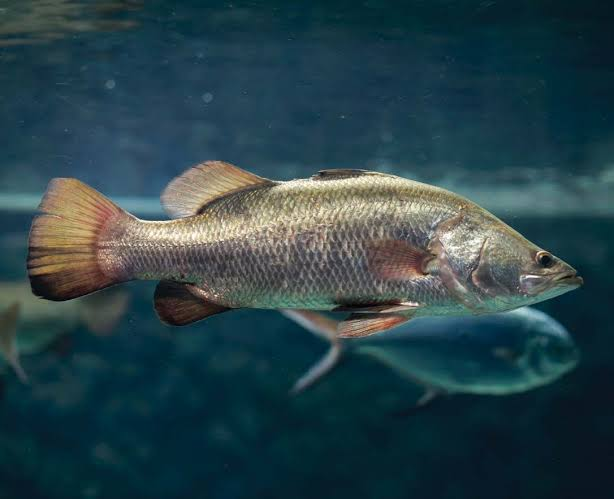
A freshwater species found in the lakes and river systems of the region.
Location: Sarangani, Sultan Kudarat
Flying fish, known locally as bangsi, can glide for short distances above the water's surface.
Location: Sarangani Bay, General Santos City
A deep-sea crab with unique red spiny claws, harvested for its tender meat.
Location: Sarangani Bay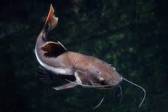
Farmed extensively in the region, particularly in freshwater ponds, and used in local dishes like adobong hito.
Location: South Cotabato, Sultan Kudarat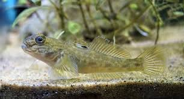
Small, colorful fish found in the mudflats and coastal estuaries of the region.
Location: Sarangani Bay, Sultan Kudarat
This large, commercial prawn species is farmed in the mangrove-rich areas of SOCCSKSARGEN.
Location: Sarangani Bay, General Santos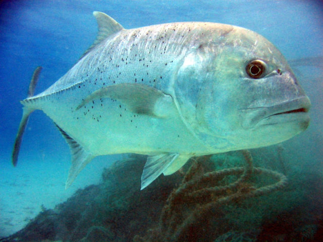
This powerful game fish is highly prized in the region, particularly around Sarangani Bay.
Location: Sarangani Bay, General Santos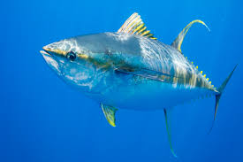
A flagship species for General Santos, one of the world’s top tuna fishing hubs.
Location: General Santos City
A small oily fish found in large schools, caught in the region’s coastal waters.
Location: Sarangani Bay, General Santos
A small to medium-sized tuna species found in coastal waters.
Location: Sarangani Bay, General SantosCaraga, located in northeastern Mindanao, is home to expansive coastal areas and coral reefs that support thriving local fisheries and marine biodiversity.
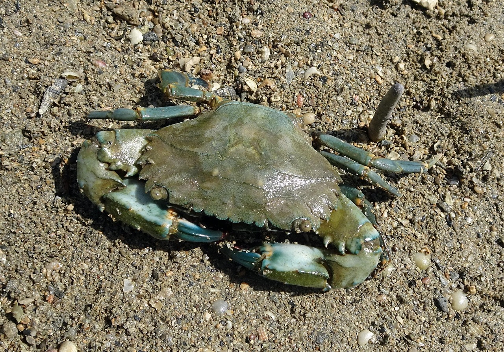
A highly prized crab often found in mangrove areas and estuaries, particularly in the Caraga region.
Location: Surigao del Sur, Surigao del Norte
A brackish water fish often found in the mangrove-lined rivers of Agusan del Norte.
Location: Agusan del Norte, Surigao del Sur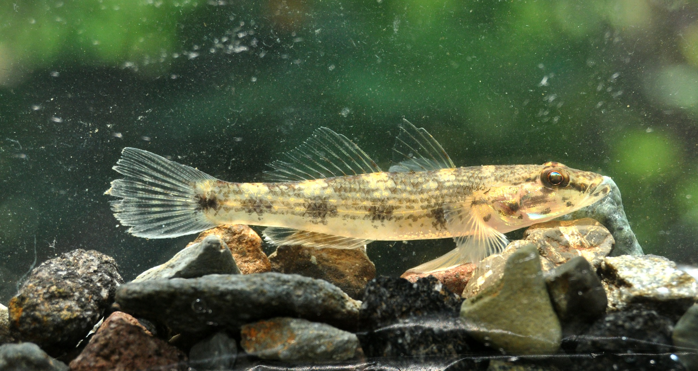
Commonly found in shallow waters and estuaries, gobies are abundant in coastal areas.
Location: Surigao del Norte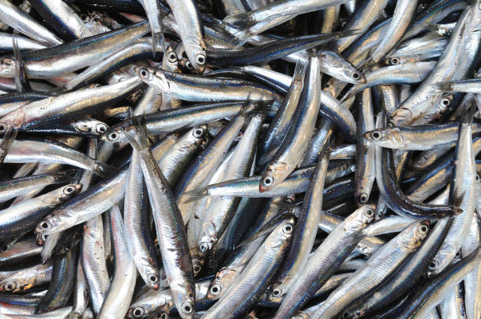
Small, schooling fish caught in large numbers during the right season.
Location: Surigao del Sur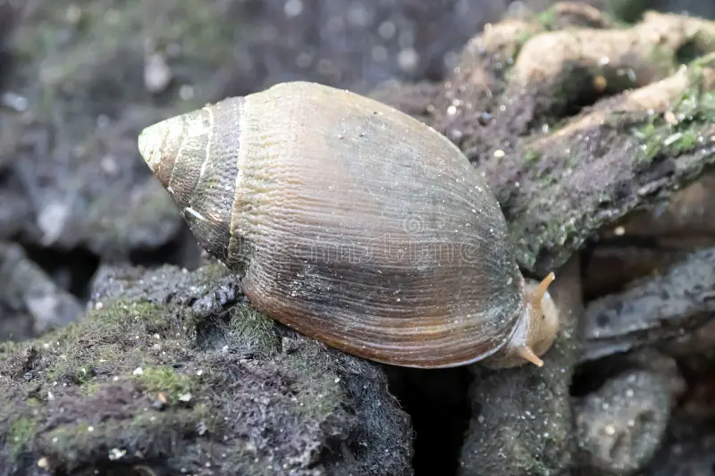
A species of snail that lives in the mangrove forests of Caraga, often collected by local communities for food.
Location: Surigao del Sur, Dinagat Islands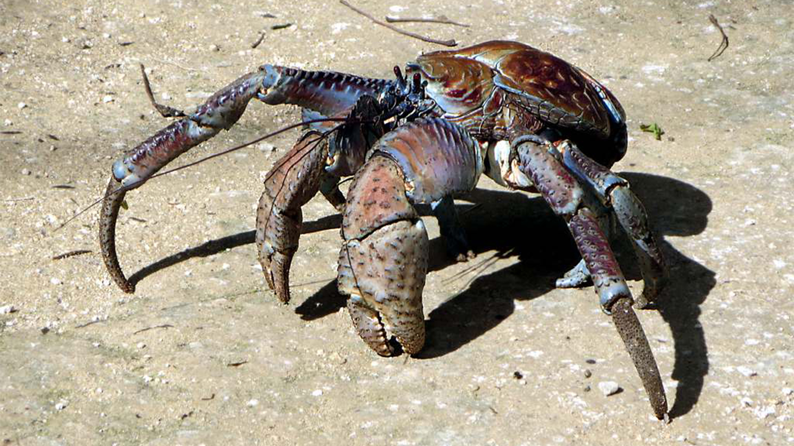
Found along the islands of Dinagat and the coastal parts of Surigao del Norte, the coconut crab is one of the largest land crabs.
Location: Dinagat Islands, Surigao del Norte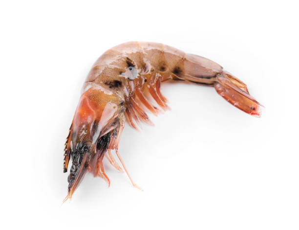
Farmed extensively in the mangrove areas of the region, especially in Surigao del Norte.
Location: Surigao del Norte, Agusan del Sur
A prized game fish in the waters around the coastal regions of Surigao del Norte and Surigao del Sur.
Location: Surigao del Norte, Surigao del Sur
Sardines that are often caught in coastal areas and river mouths, particularly around Surigao del Norte.
Location: Surigao del Norte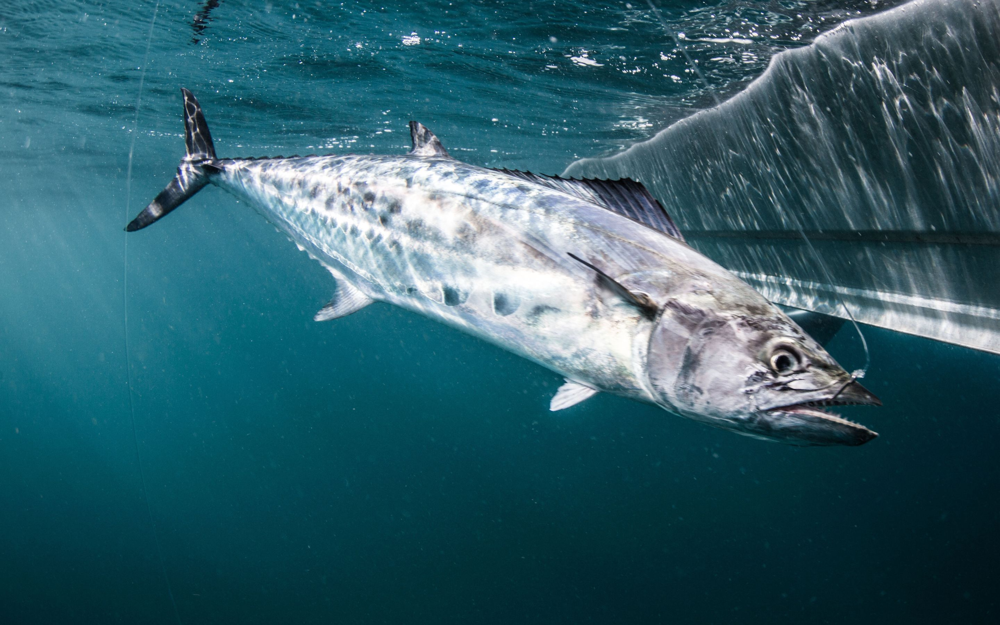
A migratory species found in the deeper waters of Surigao del Norte and Surigao del Sur.
Location: Surigao del Norte, Surigao del SurBARMM, with access to the Sulu Sea and Moro Gulf, features traditional fishing communities and abundant marine life, playing a vital role in regional food security and culture.

An important species in mangrove forests, harvested for its rich meat.
Location: Basilan, Tawi-Tawi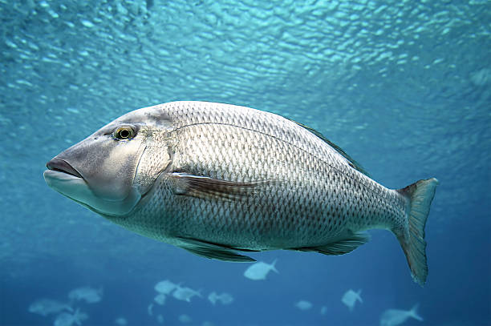
Found in the coral reefs of the Sulu Sea, this species thrives in estuaries and coastal waters.
Location: Sulu Sea Tawi-Tawi, Sulu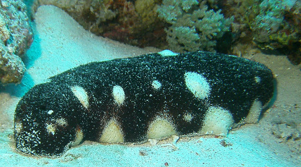
Valuable for its use in traditional medicine and as a delicacy.
Location: Tawi-Tawi, Basilan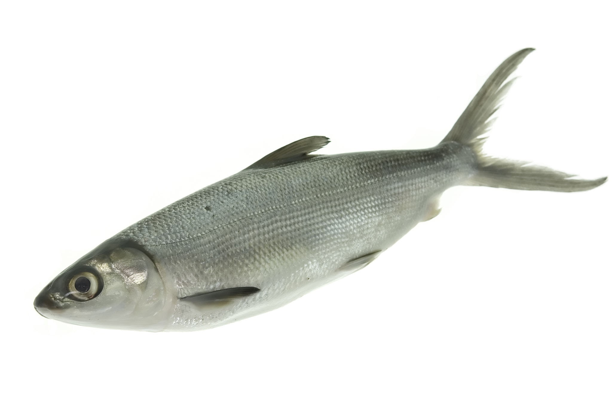
Farmed primarily in coastal ponds, this species is significant to both culture and trade.
Location: Tawi-Tawi, Basilan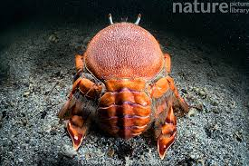
A rare deep-sea crab, prized for its sweet, tender meat.
Location: Zamboanga City, Tawi-Tawi
These endangered species use the coasts of BARMM for nesting and feeding.
Location: Tawi-Tawi, Sulu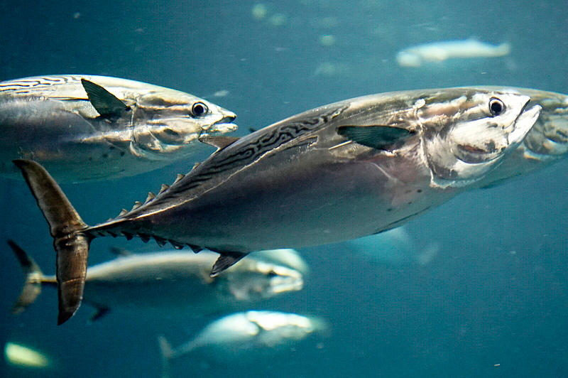
A smaller tuna species often caught in the Sulu Archipelago, vital for local food security.
Location: Sulu Archipelago, Basilan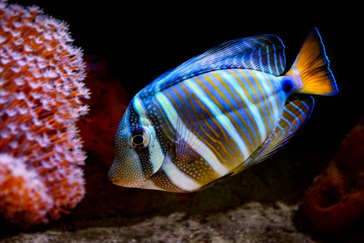
An ornamental fish with striking fin patterns, found in the reefs of the Sulu Archipelago.
Location: Sulu Archipelago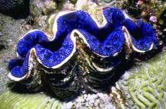
Found in the coral reefs of the Sulu Archipelago, they are iconic symbols of the region’s rich marine biodiversity.
Location: Sulu Sea